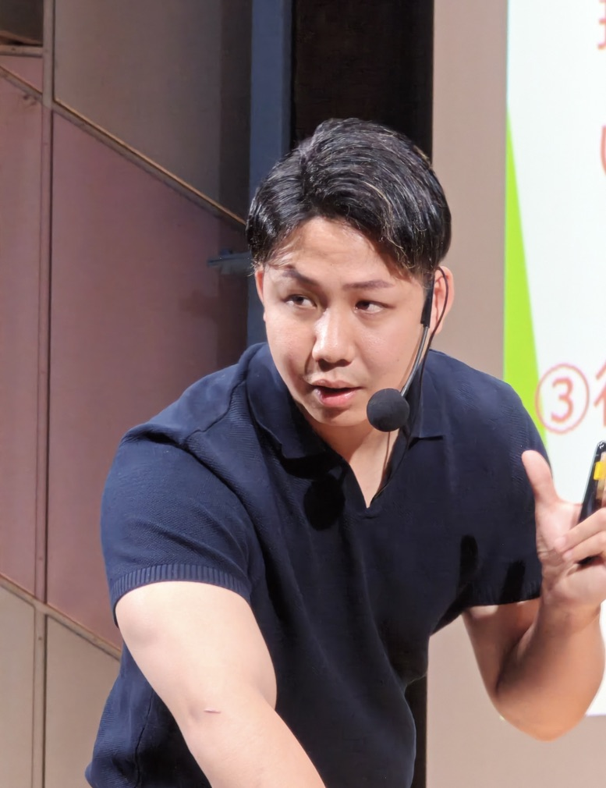

People
創設者・講師紹介
協会の技術と教育を担う人を紹介します。
認定講師は、認定と本人の掲載確認ができた方から順に掲載します。

Founder
原口 慶篤
はらぐち のりあつ（通称：のりお）
コンディショニングジャパン協会 創設者／TOTAL BODY FITNESS THEORY 代表／零式 founder
パーソナルトレーナー兼整体師として12年以上、施術と運動指導の現場に立ってきました。施術、運動指導、ボディメイク、姿勢改善のほか、専門家向けの技術教育、セミナー、企業研修を行っています。
解剖学・生理学・神経系・運動の視点と、関節調整、オステオパシー、経絡、頭部・内臓へのアプローチを組み合わせ、「零式」として12のコンテンツを開発。現在は零式の全講座を担当しています。


Career
活動分野と経歴


活動分野
- 施術（整体）・運動指導・ボディメイク・姿勢改善
- トレーナー・セラピスト向けの技術教育、セミナー
- 企業研修
資格・受講歴
- NASM-PES全米スポーツ医学アカデミー認定 パフォーマンス向上スペシャリスト（民間資格）
- NSCA-CPTNSCA認定パーソナルトレーナー（民間資格）
- 人体解剖実習（5回）
- オステオパシーの受講（スラスト BASIC・ADVANCE、内臓調整）
指導実績
- 専門家向けの技術指導（ヘッドコンディショニング、経絡ストレッチなど）
- 2026年、大阪・名古屋・埼玉・東京でセミナーを開催
- 零式-ヘッドコンディショニング極の認定講師養成（2026年11月〜）
※整体師は国家資格ではありません。

View
現場と教育への考え方
現場では、評価して、介入して、もう一度評価する。この順番を崩さないことを大切にしてきました。
教える場でも同じです。手技の形を覚えるだけでなく、何を見てその手技を選ぶのか、やった後に何を確かめるのかを、受講生が自分で再現できるところまで練習します。施術の後には、動作や運動へどうつなげるかも一緒に扱います。


Message
代表メッセージ
学んだ技術を、自分の現場で使える。そして、それを次の人に教えられる。その二つがそろったとき、技術ははじめて受け継がれていくのだと思います。
協会では、一緒に学び、一緒に教える人を増やしていきます。身体に関わる仕事をしている方と、同じ基準で学び合える場をつくっていきたいと考えています。
コンディショニングジャパン協会 創設者原口 慶篤